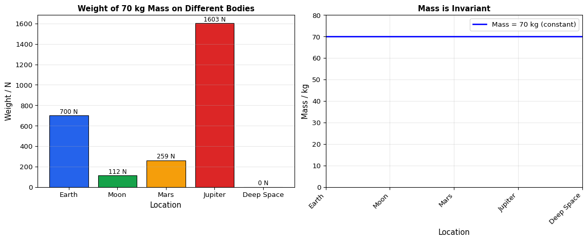
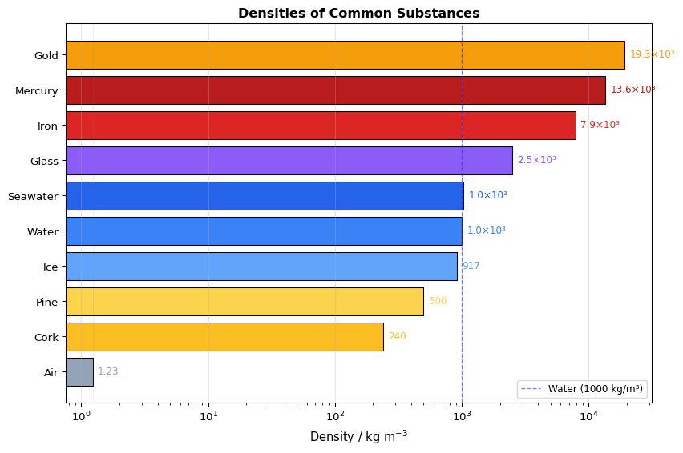
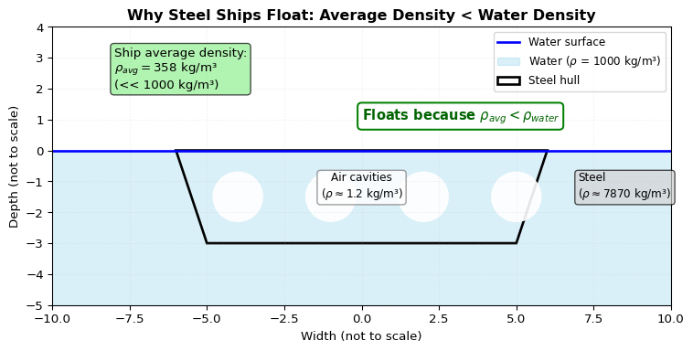
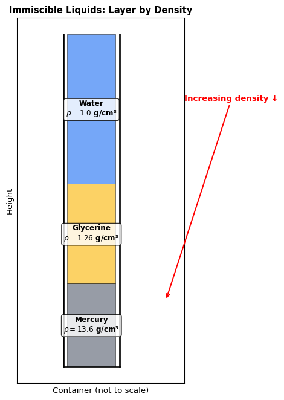
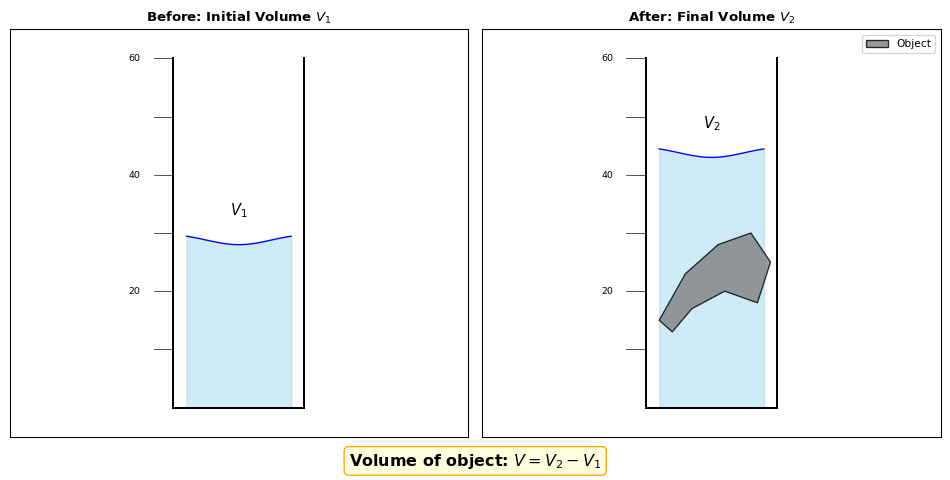

6 Mass, Weight and Density
6.1 Learning Objectives
By the end of this chapter, you will be able to:
Core Content:
State that mass is a measure of the quantity of matter in an object at rest relative to the observer
State that weight is a gravitational force on an object that has mass
Define gravitational field strength as force per unit mass; recall and use the equation \(g = \frac{W}{m}\) and know that this is equivalent to the acceleration of free fall
Know that weights (and masses) may be compared using a balance
Define density as mass per unit volume; recall and use the equation \(\rho = \frac{m}{V}\)
Describe how to determine the density of a liquid, of a regularly shaped solid and of an irregularly shaped solid which sinks in a liquid (volume by displacement), including appropriate calculations
Determine whether an object floats based on density data
Supplement (Extended):
Describe, and use the concept of, weight as the effect of a gravitational field on a mass
Determine whether one liquid will float on another liquid based on density data given that the liquids do not mix
6.2 Mass and Weight: Fundamental Distinctions
6.2.1 What is Mass?
Mass is a measure of the quantity of matter in an object at rest relative to the observer.
| Property | Description |
|---|---|
| SI Unit | kilogram (kg) |
| Nature | Scalar quantity (magnitude only) |
| Invariance | Independent of location, gravitational field, or shape |
| Measurement | Beam balance or calibrated electronic balance |
Key Concept: Mass is an intrinsic property of matter. A 10 kg object on Earth has the same mass on the Moon, in orbit, or in deep space.
6.2.2 What is Weight?
Weight is the gravitational force acting on an object that has mass.
| Property | Description |
|---|---|
| SI Unit | newton (N) |
| Nature | Vector quantity (magnitude and direction) |
| Direction | Always towards the centre of the gravitating body |
| Measurement | Spring balance or calibrated electronic scale |
Formula: \[W = mg\]
Where: - \(W\) = weight (N) - \(m\) = mass (kg) - \(g\) = gravitational field strength (N/kg) or acceleration of free fall (m/s²)
6.2.3 Gravitational Field Strength (\(g\))
Definition: Gravitational field strength is the gravitational force per unit mass.
\[g = \frac{W}{m}\]
| Location | \(g\) (N/kg) | \(g\) (m/s²) |
|---|---|---|
| Earth (surface) | ≈ 10 | ≈ 10 |
| Moon (surface) | ≈ 1.6 | ≈ 1.6 |
| Jupiter (surface) | ≈ 22.9 | ≈ 22.9 |
| Deep space (far from masses) | ≈ 0 | ≈ 0 |
Critical Insight: The numerical equivalence \(10 \text{ N/kg} = 10 \text{ m/s}^2\) arises because: - From \(W = mg\): weight causes acceleration \(g\) when unopposed - From \(F = ma\): the same force \(W\) produces acceleration \(a = g\) - Therefore, gravitational field strength is the acceleration of free fall
Warning
Important: Weight depends on location; mass does not. An astronaut with mass 70 kg weighs 700 N on Earth but only 112 N on the Moon—yet their mass remains 70 kg in both locations.
6.2.4 Measuring Mass vs. Weight
| Instrument | Measures | Principle | Location-Dependent Reading? |
|---|---|---|---|
| Beam balance | Mass | Compares gravitational forces on object and standard masses | ✗ No (both sides experience same \(g\)) |
| Spring balance | Weight | Extension proportional to force (\(F = kx\)) | ✓ Yes (depends on local \(g\)) |
| Electronic balance | Weight (calibrated to display mass) | Measures force, converts using assumed \(g\) | ✓ Yes (requires recalibration for different \(g\)) |
Practical Note: A bathroom scale calibrated for Earth will give an incorrect “mass” reading on the Moon because it assumes \(g = 10 \text{ N/kg}\).
6.3 Density: Mass per Unit Volume
6.3.1 Definition and Formula
Density (\(\rho\), Greek letter rho) is defined as mass per unit volume:
\[\rho = \frac{m}{V}\]
| Quantity | Symbol | SI Unit | Common Alternative |
|---|---|---|---|
| Density | \(\rho\) | kg/m³ | g/cm³ |
| Mass | \(m\) | kg | g |
| Volume | \(V\) | m³ | cm³ |
Conversion: \(1 \text{ g/cm}^3 = 1000 \text{ kg/m}^3\)
6.3.2 Densities of Common Substances

| Substance | Density (g/cm³) | Density (kg/m³) |
|---|---|---|
| Gases | ||
| Dry air | 0.00123 | 1.23 |
| Liquids | ||
| Turpentine | 0.87 | 870 |
| Olive oil | 0.92 | 920 |
| Pure water (4°C) | 1.00 | 1000 |
| Seawater | 1.025 | 1025 |
| Mercury | 13.6 | 13,600 |
| Solids | ||
| Polystyrene | 0.016 | 16 |
| Cork | 0.24 | 240 |
| Pine wood | 0.50 | 500 |
| Ice | 0.917 | 917 |
| Glass | 2.5 | 2500 |
| Iron | 7.87 | 7870 |
| Gold | 19.3 | 19,300 |
6.3.3 Floating and Sinking: The Density Criterion
Rule: An object will float in a fluid if its average density is less than the density of the fluid.
\[\rho_{\text{object}} < \rho_{\text{fluid}} \quad \Rightarrow \quad \text{Floats}\] \[\rho_{\text{object}} > \rho_{\text{fluid}} \quad \Rightarrow \quad \text{Sinks}\]
Why does a steel ship float? - Solid steel (\(\rho \approx 7.8 \text{ g/cm}^3\)) sinks in water (\(\rho = 1.0 \text{ g/cm}^3\)) - A ship contains large volumes of air within its hull - Average density = \(\frac{\text{total mass}}{\text{total volume}}\) (steel + air + cargo) - If average density < 1.0 g/cm³, the ship floats

Example Calculation: A ship has mass \(7.68 \times 10^7 \text{ kg}\) and dimensions \(268 \text{ m} \times 32 \text{ m} \times 25 \text{ m}\).
\[V = 268 \times 32 \times 25 = 214,400 \text{ m}^3\] \[\rho_{\text{avg}} = \frac{7.68 \times 10^7}{214,400} = 358 \text{ kg/m}^3 = 0.358 \text{ g/cm}^3\]
Since \(0.358 < 1.0\), the ship floats.
6.3.4 Immiscible Liquids: Layering by Density
When two or more liquids that do not mix (immiscible) are placed in the same container, they arrange themselves in layers according to density:
- Highest density → bottom layer
- Lowest density → top layer
Example: Mercury (\(\rho = 13.6\)), glycerine (\(\rho = 1.26\)), water (\(\rho = 1.00\))
→ Order from bottom: Mercury → Glycerine → Water

6.4 Practical Measurement Techniques
6.4.1 Measuring Mass
Using a Beam Balance:
Place object on left pan
Add standard masses to right pan until beam is horizontal
Total standard mass = object mass
Precautions: - ✓ Zero the balance before use - ✓ Do not place wet objects directly on the pan - ✓ Use a container of known mass for powders/liquids
6.4.2 Measuring Volume
6.4.2.1 Regular Solids
Use a metre rule or vernier calipers, then apply geometric formulae:
| Shape | Formula |
|---|---|
| Rectangular block | \(V = l \times b \times h\) |
| Cylinder | \(V = \frac{\pi d^2}{4} \times h\) |
| Sphere | \(V = \frac{4}{3}\pi \left(\frac{d}{2}\right)^3\) |
6.4.2.2 Irregular Solids (that sink)
Displacement method using a measuring cylinder:
Record initial water volume \(V_1\)
Immerse object completely
Record final volume \(V_2\)
Volume of object: \(V = V_2 - V_1\)
Precautions: - ✓ Read at the bottom of the meniscus at eye level - ✓ Remove air bubbles clinging to the object - ✓ Lower object gently to avoid splashing

6.4.2.3 Irregular Solids (that float)
Sinker method:
Measure volume of sinker alone: \(V_3\)
Attach floating object to sinker; immerse both
Measure combined volume: \(V_4\)
Volume of object: \(V = V_4 - V_3\)
6.4.2.4 Liquids
Using a measuring cylinder or burette:
Find mass of empty container: \(m_1\)
Add known volume \(V\) of liquid
Find mass of container + liquid: \(m_2\)
Density: \(\rho = \frac{m_2 - m_1}{V}\)
6.5 Key Concepts Summary
6.5.1 Core Concepts
Mass = quantity of matter (scalar, kg, invariant)
Weight = gravitational force on mass (vector, N, location-dependent)
Gravitational field strength: \(g = \frac{W}{m}\) (N/kg) ≡ acceleration of free fall (m/s²)
Density: \(\rho = \frac{m}{V}\); determines whether objects float or sink
Average density explains why hollow objects (ships, balloons) can float despite being made of dense materials
Immiscible liquids layer by density: highest at bottom, lowest at top
6.5.2 Extended Concepts
Weight is the effect of a gravitational field on a mass: \(W = mg\)
Floating criterion for liquids: a liquid floats on another if \(\rho_1 < \rho_2\) (provided they do not mix)
6.6 Common Misconceptions
6.6.1 ⚠️ Misconception 1: “Mass and weight are the same thing”
Incorrect: “I weigh 60 kg”
Correct: - Mass = 60 kg (amount of matter, constant) - Weight = \(mg = 60 \times 10 = 600 \text{ N}\) on Earth (force, varies with \(g\))
Memory aid: Mass is matter; Weight is force due to gravity.
6.6.2 ⚠️ Misconception 2: “An object has no weight in space”
Incorrect: Astronauts are “weightless” because there is no gravity in orbit
Correct: - Gravity at low Earth orbit is still ~90% of surface value - Astronauts experience apparent weightlessness because they are in continuous free fall around Earth - Their mass remains unchanged; their weight (gravitational force) is still present
6.6.3 ⚠️ Misconception 3: “Density depends on the size of the sample”
Incorrect: A large piece of iron is denser than a small piece
Correct: Density is an intensive property—it depends only on the material, not the amount. Both pieces of pure iron have \(\rho = 7.87 \text{ g/cm}^3\).
6.6.4 ⚠️ Misconception 4: “Heavy objects always sink; light objects always float”
Incorrect: A heavy ship sinks; a light coin floats
Correct: Floating depends on average density, not absolute weight. A massive ship floats because its average density (including air spaces) is less than water’s density.
6.6.5 ⚠️ Misconception 5: “Gravitational field strength \(g\) is exactly 10 N/kg everywhere on Earth”
Incorrect: \(g\) is constant at 10 N/kg
Correct: - \(g\) varies slightly with latitude, altitude, and local geology (~9.78 to 9.83 N/kg) - For IGCSE calculations, we approximate \(g = 10 \text{ N/kg}\) unless otherwise specified
6.6.6 ⚠️ Misconception 6: “Reading a measuring cylinder: look at the top of the meniscus”
Incorrect: Read from the upper curve of the liquid surface
Correct: For water and most aqueous solutions, read from the bottom of the meniscus at eye level to avoid parallax error.
6.6.7 ⚠️ Misconception 7: “Beam balances measure weight”
Incorrect: A beam balance gives weight readings
Correct: A beam balance compares masses by balancing gravitational forces. Since both sides experience the same \(g\), the reading is true mass, independent of location.
6.7 Worked Examples
6.7.1 Example 1: Mass vs. Weight on Different Planets
Question: An astronaut has a mass of 75 kg. Calculate their weight on: (a) Earth (\(g = 10 \text{ N/kg}\)) (b) Moon (\(g = 1.6 \text{ N/kg}\)) (c) Jupiter (\(g = 22.9 \text{ N/kg}\))
Solution: Use \(W = mg\)
- Earth: \(W = 75 \times 10 = \boxed{750 \text{ N}}\)
- Moon: \(W = 75 \times 1.6 = \boxed{120 \text{ N}}\)
- Jupiter: \(W = 75 \times 22.9 = \boxed{1717.5 \text{ N}}\)
Note: Mass remains 75 kg in all locations.
6.7.2 Example 2: Density Calculation with Unit Conversion
Question: A metal cube has sides of 2.0 cm and a mass of 62.4 g. Calculate its density in: (a) g/cm³ (b) kg/m³
Solution:
(a) In g/cm³: \[V = (2.0)^3 = 8.0 \text{ cm}^3\] \[\rho = \frac{m}{V} = \frac{62.4}{8.0} = \boxed{7.8 \text{ g/cm}^3}\]
(b) In kg/m³: Method 1: Convert units first \[m = 62.4 \text{ g} = 0.0624 \text{ kg}\] \[V = 8.0 \text{ cm}^3 = 8.0 \times 10^{-6} \text{ m}^3\] \[\rho = \frac{0.0624}{8.0 \times 10^{-6}} = 7800 \text{ kg/m}^3\]
Method 2: Use conversion factor \[7.8 \text{ g/cm}^3 \times 1000 = \boxed{7800 \text{ kg/m}^3}\]
Identification: This density matches iron/steel (\(\rho \approx 7.87 \text{ g/cm}^3\)).
6.7.3 Example 3: Floating Criterion (Extended)
Question: A solid object is placed in three immiscible liquids with densities: - Liquid A: 0.85 g/cm³ - Liquid B: 1.05 g/cm³ - Liquid C: 1.30 g/cm³
The object floats in Liquid B and Liquid C, but sinks in Liquid A. What is the possible range for the object’s density?
Solution: - Sinks in A (\(\rho = 0.85\)) → \(\rho_{\text{object}} > 0.85\) - Floats in B (\(\rho = 1.05\)) → \(\rho_{\text{object}} < 1.05\) - Floats in C (\(\rho = 1.30\)) → \(\rho_{\text{object}} < 1.30\) (redundant, as <1.05 is stricter)
Therefore: \(\boxed{0.85 \text{ g/cm}^3 < \rho_{\text{object}} < 1.05 \text{ g/cm}^3}\)
6.7.4 Example 4: Density by Displacement
Question: A measuring cylinder contains 45.0 cm³ of water. When a stone of mass 78.5 g is immersed, the water level rises to 73.5 cm³. Calculate the density of the stone.
Solution: \[V_{\text{stone}} = V_2 - V_1 = 73.5 - 45.0 = 28.5 \text{ cm}^3\] \[\rho = \frac{m}{V} = \frac{78.5}{28.5} = \boxed{2.75 \text{ g/cm}^3}\]
Identification: This density is consistent with aluminium (\(\rho \approx 2.7 \text{ g/cm}^3\)).
6.8 Practice Questions
6.8.1 Core Level
1. Define the term mass. State its SI unit.
2. A rock has a mass of 2.5 kg. Calculate its weight on Earth (\(g = 10 \text{ N/kg}\)).
3. Explain why a beam balance gives the same mass reading on Earth and on the Moon, while a spring balance does not.
4. Describe how you would determine the density of:
- a rectangular metal block
- a small irregular stone that sinks in water
- a sample of olive oil
5. An object has a density of 0.92 g/cm³. Will it float or sink in pure water (\(\rho = 1.00 \text{ g/cm}^3\))? Explain.
6. Convert the following densities:
- 2.7 g/cm³ to kg/m³
- 8900 kg/m³ to g/cm³
6.8.2 Extended Level
7. The gravitational field strength on Mars is 3.7 N/kg. An astronaut weighs 740 N on Earth. Calculate:
- the astronaut’s mass
- the astronaut’s weight on Mars
8. Two immiscible liquids X (\(\rho = 1.20 \text{ g/cm}^3\)) and Y (\(\rho = 0.85 \text{ g/cm}^3\)) are poured into a measuring cylinder. A solid object of density 1.05 g/cm³ is then added. Describe the final arrangement of the three substances.
9. A composite object is made by drilling a 2.0 cm³ hole into a 10.0 cm³ cube of material A (\(\rho_A = 8.0 \text{ g/cm}^3\)) and filling the hole with material B (\(\rho_B = 2.0 \text{ g/cm}^3\)). Calculate the average density of the composite object.
10. Explain why the numerical value of \(g\) in N/kg is equal to its value in m/s². Use the equations \(W = mg\) and \(F = ma\) in your explanation.
6.9 Laboratory Investigation
6.9.1 Experiment 3.1: Determining the Density of an Irregular Solid
Objective: To determine the density of an irregularly shaped object that sinks in water using the displacement method.
Apparatus: - Measuring cylinder (100 cm³) - Irregular solid (e.g., stone, metal piece) - Electronic balance or beam balance - String - Water - Cloth/towel
Variables: - Independent: None (single measurement) - Dependent: Density \(\rho\) - Controlled: Temperature of water, type of liquid, instrument calibration
Procedure:
Measure and record the mass \(m\) of the dry object using the balance.
Fill the measuring cylinder with water to approximately one-third full. Record initial volume \(V_1\).
Tie the object with string and lower it gently into the water until fully immersed.
Record the new volume \(V_2\).
Remove the object, dry it, and repeat steps 2–4 two more times with different initial volumes.
Calculate the average volume: \(V_{\text{avg}} = \frac{(V_2 - V_1)_1 + (V_2 - V_1)_2 + (V_2 - V_1)_3}{3}\)
Calculate density: \(\rho = \frac{m}{V_{\text{avg}}}\)
Data Table:
| Trial | \(m\) (g) | \(V_1\) (cm³) | \(V_2\) (cm³) | \(V = V_2 - V_1\) (cm³) |
|---|---|---|---|---|
| 1 | ||||
| 2 | ||||
| 3 | ||||
| Average | — | — | — | \(V_{\text{avg}}\) = |
Calculation: \[\rho = \frac{m}{V_{\text{avg}}} \quad \text{(g/cm³)} \quad \text{or} \quad \rho = \frac{m}{V_{\text{avg}}} \times 1000 \quad \text{(kg/m³)}\]
Precautions: - ✓ Read the meniscus at eye level to avoid parallax error - ✓ Ensure the object is completely submerged with no air bubbles - ✓ Dry the object between trials to prevent water mass affecting balance readings - ✓ Check balance for zero error before use
Analysis Questions:
Why is it important to take multiple readings of volume displacement?
If air bubbles cling to the object during immersion, how would this affect the calculated density? (Too high / Too high / Unaffected)
Suggest one improvement to increase the accuracy of this experiment.
Conclusion Template: “The density of the irregular solid was determined to be ______ g/cm³ (______ kg/m³). This value suggests the material may be ______, based on comparison with standard density tables.”
6.10 Exam-Style Questions
6.10.1 Paper 1 Style (Multiple Choice)
1. Which statement about mass and weight is correct?
A. Mass is a force; weight is a scalar quantity
B. Mass changes with location; weight does not
C. Mass is measured in newtons; weight in kilograms
D. Mass is constant; weight depends on gravitational field strength
2. An object has a mass of 5.0 kg. What is its weight on a planet where \(g = 4.0 \text{ N/kg}\)?
A. 1.25 N
B. 5.0 N
C. 20 N
D. 40 N
3. A liquid has a density of 0.85 g/cm³. Which of the following objects will float in this liquid?
A. Object with \(\rho = 0.90 \text{ g/cm}^3\)
B. Object with \(\rho = 0.85 \text{ g/cm}^3\)
C. Object with \(\rho = 0.80 \text{ g/cm}^3\)
D. Object with \(\rho = 1.00 \text{ g/cm}^3\)
6.10.2 Paper 3 Style (Structured)
4. (a) Define gravitational field strength. [1]
The gravitational field strength on the surface of Mercury is 3.7 N/kg.
Calculate the weight of a 12 kg rock on Mercury. [2]
State the mass of the same rock on Earth. [1]
Explain why the mass is the same on both planets. [1]
5. A student determines the density of a metal sample.
Describe how the student can measure the volume of an irregular metal sample that sinks in water. Include a labelled diagram if helpful. [3]
The student records:
- Mass of sample = 89.2 g
- Initial water volume = 35.0 cm³
- Final water volume = 45.0 cm³
Calculate the density of the metal in g/cm³. [2]
Suggest why the student repeated the volume measurement three times. [1]
The calculated density is 8.92 g/cm³. Identify the likely metal using Table 3.2. [1]
6.11 Chapter Summary
6.11.1 Key Points to Remember
✓ Mass = quantity of matter (kg, scalar, invariant)
✓ Weight = gravitational force (\(W = mg\), N, vector, location-dependent)
✓ Gravitational field strength: \(g = \frac{W}{m}\) (N/kg) ≡ acceleration of free fall (m/s²)
✓ Density: \(\rho = \frac{m}{V}\); intensive property, material-specific
✓ Floating criterion: \(\rho_{\text{object}} < \rho_{\text{fluid}}\) → floats
✓ Immiscible liquids layer by density: highest at bottom
✓ Beam balance measures mass (location-independent); spring balance measures weight (location-dependent)
✓ Displacement method for irregular solids: \(V = V_2 - V_1\)
✓ Unit conversion: \(1 \text{ g/cm}^3 = 1000 \text{ kg/m}^3\)
6.11.2 Formulae Sheet
| Quantity | Formula | Variables |
|---|---|---|
| Weight | \(W = mg\) | \(W\)=weight (N), \(m\)=mass (kg), \(g\)=field strength (N/kg) |
| Gravitational field strength | \(g = \frac{W}{m}\) | Same as above |
| Density | \(\rho = \frac{m}{V}\) | \(\rho\)=density, \(m\)=mass, \(V\)=volume |
| Volume by displacement | \(V = V_2 - V_1\) | \(V_1\)=initial volume, \(V_2\)=final volume |
6.12 Further Resources
6.12.1 Recommended Reading
- Cambridge IGCSE Physics Coursebook, Chapter 3
- Practical Work in Physics: Measurement of Mass, Weight and Density
6.12.2 Online Resources
- PhET Interactive Simulations: Masses & Springs, Density
- BBC Bitesize: Mass, Weight and Density
6.12.3 Video Resources
- Demonstration: Measuring density of irregular objects
- Animation: Why ships float—average density explained
6.13 Glossary
| Term | Definition |
|---|---|
| Average density | Total mass divided by total volume of a composite object |
| Beam balance | Instrument that compares masses using gravitational forces; gives location-independent readings |
| Density (\(\rho\)) | Mass per unit volume; \(\rho = m/V\) |
| Displacement method | Technique to find volume of irregular solids by measuring water level change |
| Gravitational field strength (\(g\)) | Force per unit mass; \(g = W/m\); numerically equal to acceleration of free fall |
| Immiscible | Liquids that do not mix when combined |
| Intensive property | Property independent of sample size (e.g., density, temperature) |
| Mass | Measure of quantity of matter; scalar; SI unit: kilogram (kg) |
| Meniscus | Curved surface of a liquid in a container; read from bottom for water |
| Spring balance | Instrument that measures weight via spring extension; reading depends on local \(g\) |
| Weight | Gravitational force on a mass; vector; SI unit: newton (N); \(W = mg\) |
End of Chapter